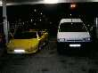
Fin de l'année, dernière occasion de voler ensemble. Pas un festival, une conviviale un peu surprise dont le lieu change tous les ans (faut pas abuser toujours des mêmes généreux hôtes !). C'est fait pour des cervolistes gonflés et aimant le défi, car la météo à cette époque n'est même pas aléatoire ! Donc, en général, on affronte des vents pas possibles, on se gèle, on se mouille et il faut se réchauffer solidement...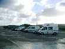
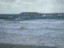
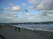
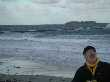
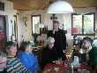
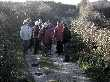
L'après-midi, vent toujours dément. On décide d'abord d'une petite ballade autour du Cap Lévi pour bien en profiter, et c'est sûr, c'est vivifiant !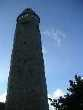
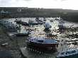
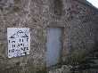
On a profité de la ballade pour s'initier à l'Art Gravage. Quoi t'est-ce ? Hé bien on ramasse le long des grèves (c'est la période "Gravage") des bois flottés et tous objets intéressants, et on les assemble (c'est la période "Art") pour faire des "statues" ou des objets curieux et intéressants (sièges, portemanteaux, mobiles, jardins du vent, etc.).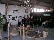
Comme il fait toujours trop de vent, on change le programme (CV après la ballade) pour visiter dans la foulée l'atelier de l'association pilotée par un fondu de la chose et à laquelle Michel participe.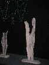
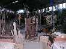
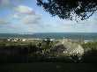
Comme il fait encore jour, en attendant le resto tout le monde est invité au thé-vin chaud chez Michel. De chez lui une splendide vue dominante sur la rade de Cherbourg.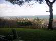
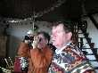
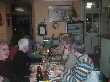
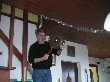
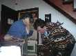
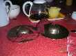
...ou des cymbales de bronze qui placées près des oreilles voient leurs graves s'amplifier, avec des modulations profondes en fonction de leur mouvement.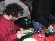
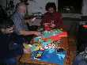
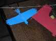
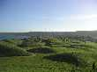
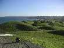
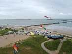